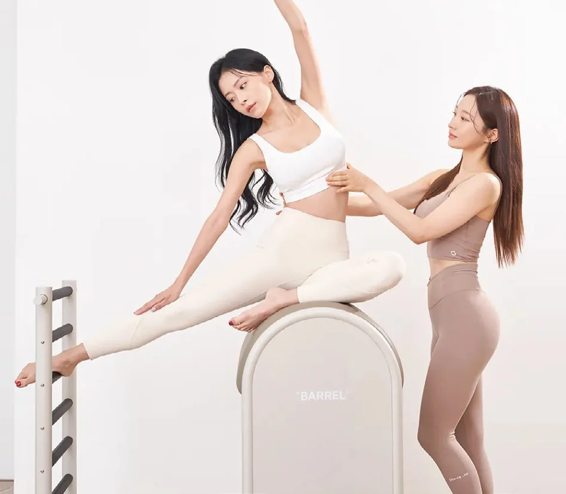
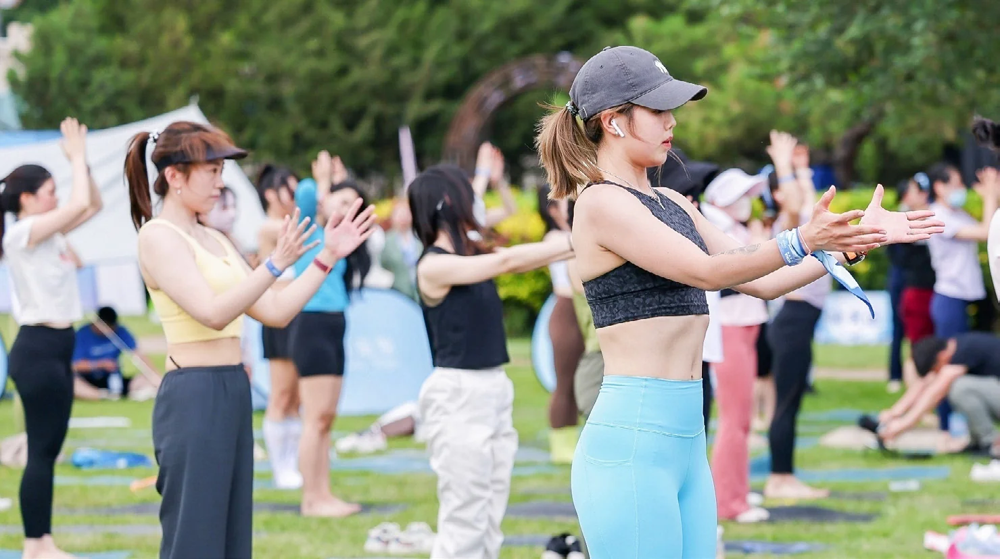

品牌篇 · 美岸日常
用门店、人物和城市生活建立第一印象，拍出为什么下班后还想来
6 篇美岸，是你下班后还想去的普拉提馆。

给身体
留一小时。
首月的首要任务是建立品牌认知。先让门店周边、对普拉提感兴趣的人认识美岸，知道这里有专业教练带练，也能想象下班后走进门店、跟着老师练完一堂课的样子。
美岸已有教练、器械普拉提课程、门店空间、骑行社群和海洋瑜伽节。首月从一堂真实晚课切入，用人物、课堂和活动档案呈现这些已有的品牌资产。用户看完几篇，应当能说清楚美岸是什么，以及这里有什么让人愿意再来。
用门店、人物和城市生活建立第一印象，拍出为什么下班后还想来
6 篇用一次教练判断、一个器械细节或一段课堂变化，让用户看懂美岸怎么带练
4 篇用已有骑行和海洋瑜伽节档案讲社群。次月起再加入新活动招募与回顾
2 篇Vuori 公开主页上的内容能看出三条线。置顶笔记用人物和动作建立品牌印象，色彩和产品系列用季节、触感与使用场景讲功能，「自在场」则持续承接运动社群和线下体验。以浅蔷粉为例，同一个颜色既能拍成秋冬造型，也能放进晨间瑜伽、午后散步和朋友小聚，还可以延伸出体验官互动。
美岸借鉴的是用一个主题串起不同内容，以及用一句有态度的话给体验命名。比如，器械弹簧的调整可以写成《力量有分寸》。标题是美岸对练习的理解，内页拍出教练具体做了什么。首月按以下三个栏目执行：
0–1 阶段先把每周一篇官号专业图文做扎实。围绕新手入门、器械理解和教练判断，稳定回答“美岸怎么带练”。同步由门店 KOS 用真实门店、老师和课堂承接同城搜索与到店决策。
《第一堂普拉提｜身体有自己的起点》。从教练课前问的第一个问题写起，跟拍第一次来的人怎样开始练习。对应“零基础怎么开始、第一次上课要准备什么”。
教练用本店真实课堂回应“第一次上课是什么流程”，带出门店位置与体验信息。
《器械普拉提｜力量有分寸》。跟拍一次真实的弹簧调整，用教练的一句话说明为什么换档。对应“器械普拉提是什么、弹簧阻力怎么选”。
拍摄老师如何调整一次器械设置，以门店实景承接本店周边搜索。
《美岸小班｜一起练，各有步调》。用同机位拍同一课堂里的两位学员，呈现教练给出的不同提示。对应“小班课适合零基础吗、教练会怎么调整”。
从店内小班课出发，讲清这家门店如何照顾不同练习节奏。
《把动作做小一点》。拍教练给出提示、学员调整后再做一次，请教练解释这一次选择。用真实细节呈现专业度，避免泛讲功效。
用店内一次真实调整做月末补充，附上经核实的地址、营业时间与咨询方式。
从“知道美岸”到“想来附近练”，每篇笔记只承接一类明确需求。词先进入标题、首屏和正文自然语境，再由真实门店内容补足地点与体验信息。
负责账号品牌官号
负责账号官号讲方法 · 教练 KOS 讲课堂
负责账号对应门店 KOS

力量
有分寸。
3:4 封面 · 使用品牌书课堂素材
用“器械普拉提”对齐明确搜索词；“力量有分寸”保留品牌表达。封面先吸引停留，正文解释教练为什么调整弹簧、练习者会感受到什么。
4 篇官号专业图文按上方第 1–4 周排期，每周 1 篇
4 篇门店 KOS 图文两家试点店各 2 篇，围绕同周主题提供本店现场版本
实际搜索词以门店地址、账号后台可见搜索来源和用户提问持续校正。
检查 2 篇官号及首批 KOS 是否按计划发布；查看可获取的搜索来源、曝光、收藏、主页访问、评论与咨询。记录用户原话和实际出现的搜索词，标出“已覆盖 / 未覆盖 / 需改标题”，不因单篇低互动立即判定栏目无效。
按词组和账号汇总 4 篇官号 + 4 篇门店内容，对比搜索曝光或来源、收藏率、主页访问、有效咨询及门店反馈。选出能持续带来搜索访问或具体咨询的词，扩写为下月主题；有曝光无停留则改封面标题，有收藏无咨询则补门店与体验信息。后台若无搜索词明细，采用评论提问、私信问询和门店到店来源作定性补充。
人物标题在采访后定稿。年末话题已有一个固定位置，临时热点最多替换当周一篇品牌内容。 例如当地降温带起室内运动讨论，可以用门店当天拍到的街景和晚课，做《降温后的第一节晚课》。判断标准是同城用户确实在聊、门店有真实素材、选题能讲出一件关于美岸的事。
主页与拍摄。 三篇置顶建议选首发品牌篇、第一堂课、以及最能体现教练专业的一篇。第一堂课图文的末页放经核实的门店与体验信息。拍摄先在同城两家试点店集中采集教练、器械和真实课堂，再按周补人物和门店细节。整体用 3:4 真景摄影，取品牌书里的浅苔绿、米白与暖木色。品牌篇用人物和空间撑画面，专业篇贴近动作和器械，活动篇保留户外和现场的光线。
力量
有分寸。
品牌书课堂照片 · 版式示意
从品牌、专业、活动三个方向中，选专业篇做一篇完整样稿。这篇能同时呈现品牌标题、图文审美和美岸的课堂体验。
封面
教练的手伸向弹簧，暖光落在器械边缘，背景留出一点正在练习的人。封面只放五个字：力量有分寸。
拍学员第一次做这个动作，交代这是晚课里的哪一组练习。
拍教练调整弹簧的手。让读者先看到她改了哪里。
同机位拍调整后的下一次动作，尽量保留滑床往返的细节。
放教练的一句现场解释。只回答这一次为什么调、她想让这位学员感受到什么。
一堂晚课里，教练有时会在器械旁停一下，看一遍滑床怎么出去，又怎么回来。她换一个弹簧档位，让学员把同一个动作再做一遍。
用多大的力，要看这一刻在练什么。变化有时很小，自己却能感觉到：推出去的时候，身体更有把握。回来的时候，也知道怎么慢慢收住。
美岸普拉提｜给身体留一小时
正式发布时，以教练确认的课堂细节和学员的真实感受定稿。
第一个月建立印象，第二个月给用户一次走进来的机会，第三个月验证什么值得持续做。首月按 4 篇官号专业图文 + 4 篇门店 KOS 起步；第二、三月各约 12 篇官号图文。前三个月约 28 篇官号图文，门店 KOS 单独统计。
4 篇官号专业图文 + 4 篇门店 KOS；两家试点店各 2 篇
用户能不能说出美岸是做什么的？记住的是教练、课堂还是空间？
约 12 篇官号图文。以首月真实问答做新手选题，试办 1 场器械普拉提开放日
哪些内容带来了报名？实际到场的人，在体验前后最关心什么？
约 12 篇官号图文。连载会员与教练故事，复办一次反馈较好的活动，或试点美岸 × 莫纳双课
哪两种图文值得长期连载？什么活动值得复办？哪套门店流程可以交给下一家？

第 2 月，把一次开放日做成一组内容。 提前 5–7 天发邀请，讲清楚谁带课、适合谁、怎么报名。活动前请教练回应一个真实顾虑，比如第一次来要不要提前准备。活动后 48 小时内发回顾，用课堂照片和参与者的实际提问完成收尾。品牌团队负责主题、内容和招募，店长与教练负责班额、接待和签到。用同一张表记录确认报名、实际到场和小红书来源。
第 3 月，做出可以继续连载和复办的样板。 品牌篇挑两位常来练习的会员，分别从写字楼附近和社区型门店切入，讲她们如何给一堂课腾出时间。专业篇继续拍「一个课堂瞬间、一句教练解释」，从首月反馈最好的细节延伸。活动根据报名、到场及现场反馈决定复办开放日，或用一次普拉提 × 瑜伽双课验证跨品牌体验。季度末交付两套可连载的内容形式、一份门店共创手册和一场有完整记录的活动样板。
同城先选两家试点门店，每店一位内容联系人。首月每店两篇，总部每两周供一次选题、封面和拍摄清单。官号写为什么值得来美岸，门店写这一家店、这一位老师、这一堂课。 例如官号发《力量有分寸》，门店可以由教练讲自己课上的一次具体调整，用各自的现场素材。
参与动力从排班和支持入手。店长留出采集时间，品牌运营负责改稿和修图。每月由官号署名推荐一两篇门店笔记，带着门店看真实评论和咨询。两家店能够稳定提供原创、也能接住用户问题后，再考虑增加发布频率或接入新门店。
将试点过的内容、门店协作和活动做法，逐步带到更多有人员与素材条件的门店
形成季节主题、固定栏目、城市活动月历。室内普拉提和瑜伽按门店条件滚动开展，骑行随季节安排。看活跃门店数、同城反馈及小红书来源的实际到场。
建立四季内容体系，集中做成一个用户愿意记住、也愿意再次参加的品牌活动
优先评估延续海洋瑜伽节，把普拉提、瑜伽和城市社群接进同一个年度主题。条件成熟时再做跨城联动。复盘品牌相关主动搜索或主页访问趋势、活动重复参与和用户原创内容。